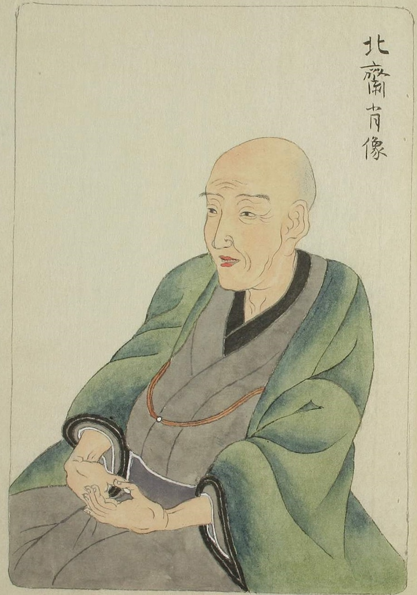
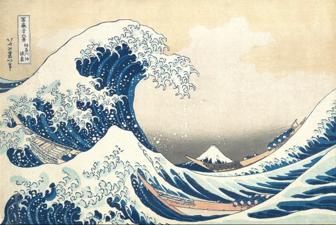

Katsushika Hokusai
Hokusai fue un maestro del género ukiyo-e y produjo una gran cantidad de obras a lo largo de su vida, abarcando temas que van desde retratos, paisajes y escenas cotidianas hasta ilustraciones eróticas.

La Gran Ola de Kanagawa
Contiene una frescura y una expresión de síntesis que en occidente solo fue posible realizar hasta el siglo XX, y además bajo la influencia de este modelo oriental.